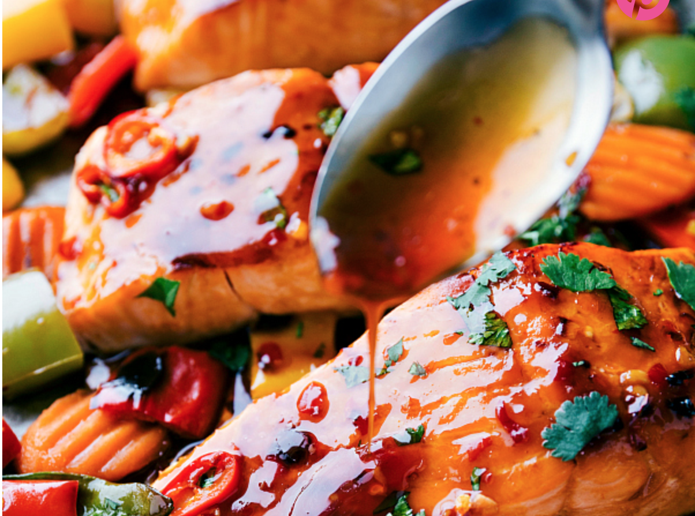
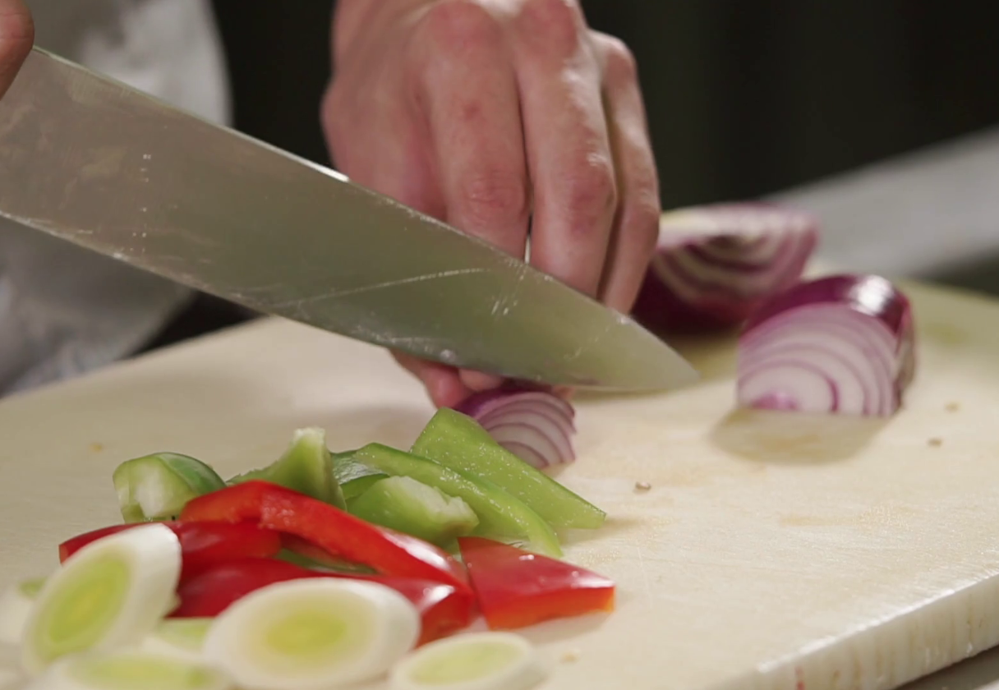
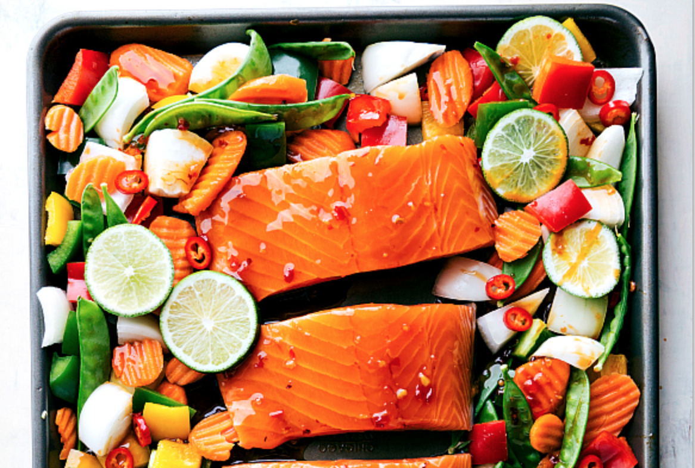
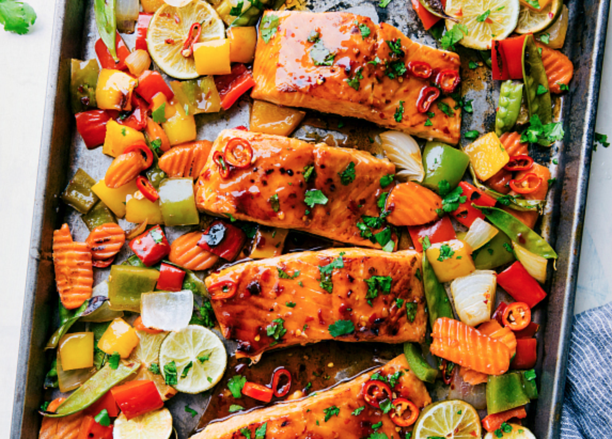

|

Ingredients: Salmon fillet, Red Bell Pepper, Green Bell Pepper, Onion, Carrots, Thai Sweet Chilli Sauce, Lime juice, Ginger |
|

Cut all the vegetables into small strips or cubes |
|

Pre-heat your oven to 375F. The drizzle the ginger, thai sweet chilli sauce and red pepper flakes on the salmon and vegetables. Leave 1/4th for the end |
|

cover the tray with foil and bake it for 15 minutes. Remove foil and bake for 5 more minutes till the top starts to blacken. |
|
drizzle the leftover marinade on the the tray and serve! |